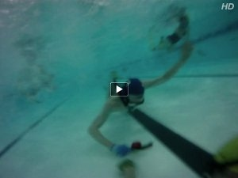
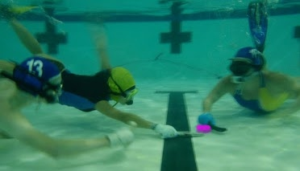

Hockey action
A very brief introduction to UWH filmed in San Francisco!
USA UWH promo video, with a few more details. Filmed in several cities.

"Underwater hockey, from my point of view" shot by Terje at the YMCA

Sunshine and Tom go after Elaine's puck.
A picture taken deck side of the 1st San Francisco Potluck tourney in 2008
The team posing with our logo-emblazoned Camelbak bottles

Hockey gear on Jason's head: ear
protection, mask straps, mouth guard on snorkel.
Sean has taken many pictures at practices and tournaments. He has a small album of
photos from local practices.
Slides Tom used on July 18, 2010 when giving a brief presentation to some people interested in freediving. This features many awesome photos taken by Adam Lau.
Media
Some news outlets have published stories about our team. More press is always welcome. Please
contact us and we can help you arrange interviews, pictures and video.
SF Bay Guardian, Best of Bay 2009
Golden Gate [X]Press, Aquatic Romp by Lindsey Barber, Nov 16, 2009. (
text archive,
pdf with photos)
Urban Daddy, Life Aquatic Underwater Hockey in the Presidio, Aug 04, 2009
Past tournament teams
Santa Clarita (LA) 2019 Pacific Coast Championships. Silver medal in the Mixed division!
Left to Right: David Quiec (loaned from Club Puck), Calvin Chan, Gustavo Pesce, Raymond Zhang, Tom Brown, Jenny Biener (loaned from Philadelphia/Delaware), Joey Grandov, Elaine Willoughby, Che Shimizu-Castellanos, Eric Mai, Lara Pesce Ares, Mansi Modi (first tournament for Mansi!).

We sent two teams to the 2013 Nationals. Here is Angel Island, our A team.

San Francisco 2009 National Team on land and in the water. We won the B Division!

PCC's 2009

San Francisco 2007 National Team
From Left: Joe Grandov, Jon Keeney, Wendy Okafuji, Tom Brown, Tina Butler, Stephen Akridge, Seda Hos, Steve Hill, Matt Blair
Not Pictured: Danny Monroe, Terry Sutton


{kind=link}